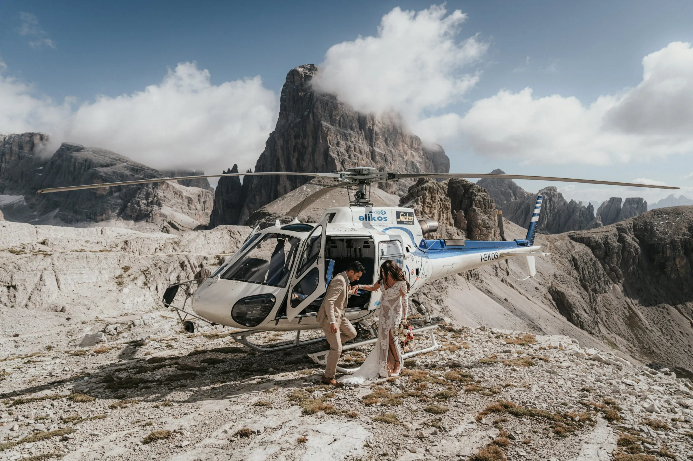

Mountain Elopement
Progettate il vostro elopement perfetto
Matrimoni intimi in montagna nelle Dolomiti e nelle Alpi — solo voi due, una vetta e una storia da raccontare.
Iniziate la vostra storia
Matrimoni intimi in montagna nelle Dolomiti e nelle Alpi — solo voi due, una vetta e una storia da raccontare.
Iniziate la vostra storiato elope — sfuggire all’ordinario e sposarsi dove il mondo diventa silenzio.
Progettiamo matrimoni intimi che riflettono la vostra storia d’amore unica. Se volete rinunciare a location sfarzose e lunghe liste di invitati, avete trovato il vostro partner. Celebriamo l’individualità intrecciando un romanticismo senza tempo in ogni elopement che creiamo.
Da laghi cristallini a vette innevate e prati tranquilli, le nostre location selezionate in tutta Europa sono scelte per la vostra visione — e vi accompagniamo a ogni passo.
Come funziona →
Pianificazione, permessi, fiori, torta, cerimonia, fotografia e film — un team locale, un unico referente. Voi arrivate, di tutto il resto ci siamo occupati noi.
Dagli elopement in elicottero sopra le Dolomiti a location selezionate raggiungibili in funivia: creiamo giornate mozzafiato per coppie che desiderano l’emozione della vetta — con o senza la camminata di sei ore.
Da austriaci, sappiamo come rendere il vostro matrimonio in montagna legalmente valido — con un ufficiale di stato civile in vetta. Cerimonia vera, certificato vero, montagne vere. (Le cerimonie simboliche nelle Dolomiti italiane sono, naturalmente, altrettanto belle.)
Un piccolo team locale, a casa tra Innsbruck e le Dolomiti — la planner Jlenia, il fotografo Andreas e la filmmaker Stefanie. Premiati: Way Up North Awards 2024.
La nostra planner nelle Dolomiti — logistica, permessi, alloggio e ogni dettaglio gestito sul posto, così potete semplicemente esserci. Con anni di esperienza e cresciuta nel cuore delle Dolomiti, conosce ogni pietra — il che crea un’atmosfera splendidamente rilassata.
Dolomites Wedding Planner →Fondatore e fotografo principale — tirolese, a casa tra Innsbruck e le Dolomiti. Premiato (Way Up North Awards 2024), pubblicato su Rangefinder. Andreas accompagna ogni coppia verso la luce e racconta la giornata come si sente davvero.
Blitzkneisser →"La loro conoscenza del territorio è stata preziosissima. Ci hanno consigliato la vetta perfetta e hanno reso il nostro giorno magico davvero indimenticabile."
Recensioni a cinque stelle di coppie che abbiamo sposato in montagna.
We cannot express how amazing the Mountain Elopement team were from start to finish — taking care of every little detail to make our day the most magical it could be. The day, location and photos all surpassed our expectations.
Wow. I am speechless. We decided to elope on our vacation in Italy and the photos are AMAZING. Andy is such a charismatic and wonderful soul — we highly recommend the Blitzkneissers!
An amazing team from start to finish. They woke up at 1am, showed up with all smiles, and were an amazing group of humans to spend such a magical day with.
Absolute Empfehlung! Wir hätten uns keine bessere fotografische Begleitung für unser Sunrise-Elopement vorstellen können. Andreas ist ein herausragender Fotograf.
I wish there were more stars we could give. Our day was perfect and so much fun — everyone made us feel so comfortable. We highly recommend Mountain Elopement, especially in the Dolomites.
We chose them for the aesthetic of their photographs — a pleasant surprise that they are so friendly and chill, while guiding us professionally. Couldn’t have asked for a more perfect crew!
Prenotare un matrimonio tra montagne che non avete mai calpestato richiede fiducia. Negli anni il nostro lavoro è stato premiato e pubblicato da chi le coppie prendono come riferimento.
Usiamo cookie per statistiche anonime (Google Analytics tramite Google Tag Manager) per migliorare il sito. L'analisi parte solo con il tuo consenso. Privacy